MIGUEL GUHLIN · TEACHING WITH GEN AI
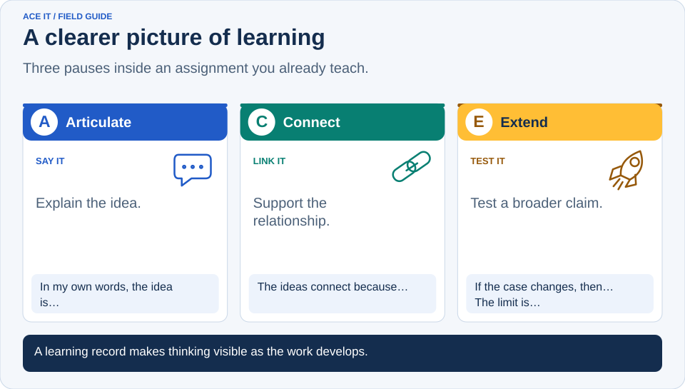
ACE It: Three Checkpoints for Better Assignments
It’s Sunday evening, and you’re reviewing an assignment you’ve taught for years. A student could paste the directions into ChatGPT and get a polished response before you finish your coffee. You still need to know whether that student understands the lesson. Your coffee did not sign up for forensic work.
Sound familiar? Gen AI has made a familiar assessment problem harder to ignore: a finished product gives you only part of the picture.
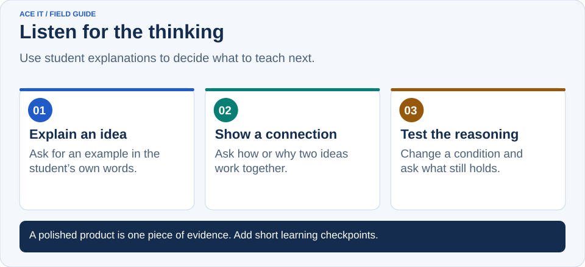
Start With What Students Can Explain
Lisa Nielsen’s Tech and Learning article asks educators to reconsider the assignments they give. Michael Hernandez offers an online assignment review tool and describes his thinking in EdSurge. Their work raises a useful question: what would give you a clearer picture of student learning?
I’d start with an assignment you already teach. Keep the content and add three short checkpoints. Ask students to explain an idea, show how ideas relate, and use a principle under changed conditions.
That’s ACE It: Articulate, Connect, Extend. The ACE framework gives students a routine they can remember. SOLO Taxonomy helps you judge how much understanding their responses reveal.
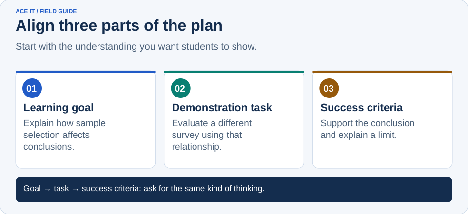
Choose One Learning Goal
Before changing the directions, finish this sentence:
Students will explain how ______ relates to ______ and use that relationship to ______.
For a statistics lesson, your goal might be: “Students will explain how sample selection affects conclusions and use that relationship to evaluate a different survey.” You now have something specific to teach and assess.
Match the goal to the course. A lesson that builds basic knowledge may stop at Articulate. An assignment about relationships may focus on Connect. Use Extend when applying or generalizing a principle belongs in the learning goal.
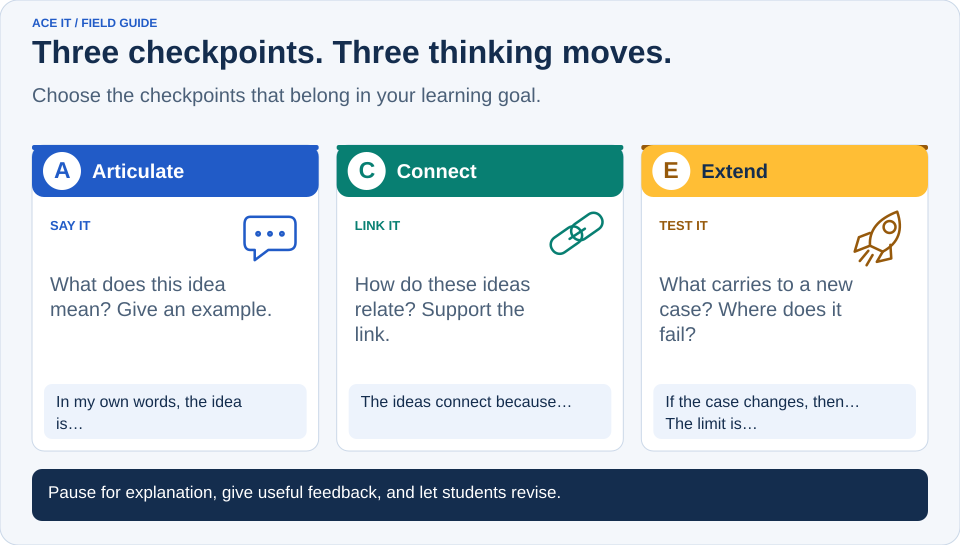
Add Three Checkpoints
| Checkpoint | Ask students | Look for |
|---|---|---|
| Articulate | Explain the central idea and give an example | Accurate understanding of relevant concepts |
| Connect | Explain how the ideas work together and support the relationship | A defensible explanation of how or why |
| Extend | Apply a principle under changed conditions and explain a limit | Reasoning that supports the application or generalization |
At Articulate, a two-minute response can reveal a missing concept before it becomes a full-page misunderstanding. Teach what the response shows students need. Model a short explanation if students do not yet know what a useful response looks like.
At Connect, pause the assignment. Give one suggestion students can act on: “You named two causes. Explain how one changes the effect of the other.” Then give them time to revise.
At Extend, change something that matters. Change the numbers, the source, an assumption, or a constraint. Ask students which part of their reasoning still works and which part needs attention.
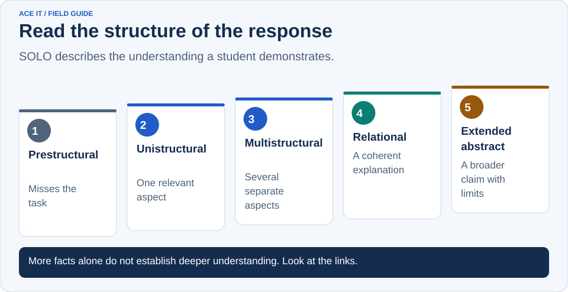
Use SOLO to Read the Responses
SOLO stands for Structure of Observed Learning Outcomes. It describes the complexity of the understanding students demonstrate. You can use it to distinguish a list of facts from an explanation that brings those facts together. SOLO guide
| SOLO level | What you might observe |
|---|---|
| Prestructural | The response misses the task or shows a misconception |
| Unistructural | The student explains one relevant aspect |
| Multistructural | The student explains several aspects but leaves them separate |
| Relational | The student links the aspects into a coherent explanation |
| Extended abstract | The student develops a broader principle, prediction, or generalization and explains its limits |
Articulate usually supports unistructural and multistructural understanding. Connect asks for relational understanding. Extend can reveal extended-abstract understanding when students move beyond the original case and justify a broader claim.
A second example does not automatically reach the highest level. Look at the reasoning. If a student can apply a method to a similar problem, that is useful progress. Ask for a supported generalization when the goal calls for it.
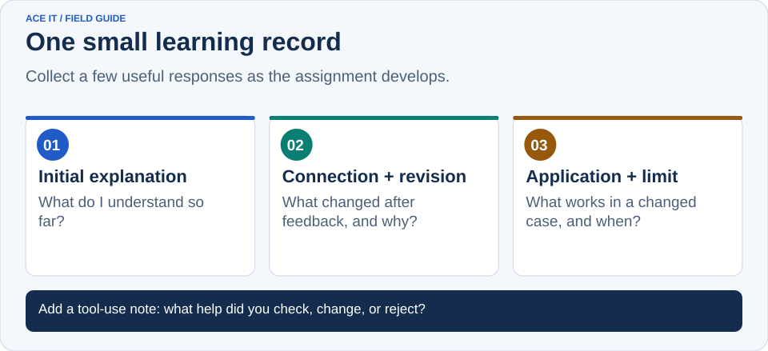
Make the Online Part Small
Use one shared document or three short submissions in Canvas, Moodle, or Google Classroom. Call it an ACE Learning Record. Students add their explanation, relationship, revision, and application as the assignment develops.
You do not need screenshots of every click. You need a few responses that help you decide what to teach next. Add this prompt after feedback:
What did you change, and how did the change improve your reasoning?
Include a short tool-use note: “What help did you use? Which suggestion did you check, change, or reject, and why?” State the permitted uses of Gen AI before students begin.
The ACE It builder creates an editable plan, student prompts, and a learning-record template from your goal. It uses built-in templates and runs in your browser. Review its suggestions against your subject and learners before sharing them.
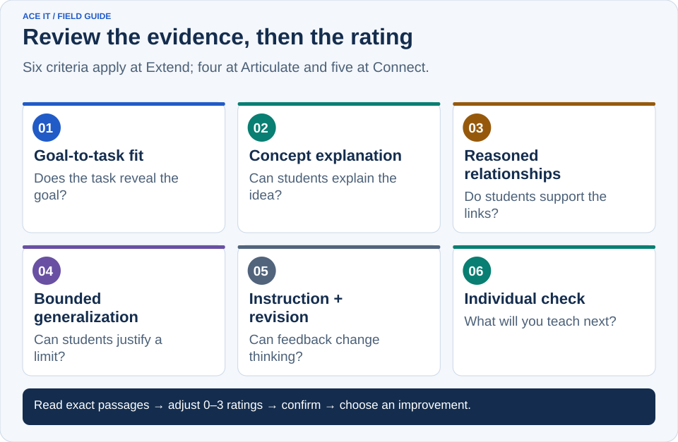
Give Your Plan a Second Look
Once you have a draft, open ACE Check. Paste your lesson plan or syllabus, or upload a PDF, DOCX, text, or Markdown file. Choose lesson plan, syllabus, or combined syllabus and lesson plans, then select the intended Articulate, Connect, or Extend depth. The document is read locally in your browser. A scanned PDF needs searchable text first.
The tool looks across the supplied sections for evidence and suggests ratings from zero to three. At Extend, it reviews six parts of the design:
| Criterion | The question to ask |
|---|---|
| Goal-to-task fit | Does the task reveal the understanding promised by the goal? |
| Concept explanation | Can students explain the idea accurately and give examples? |
| Reasoned relationships | Do students explain how ideas relate and support their reasoning? |
| Bounded generalization | Can students justify a broader claim and explain where it fails? |
| Instruction-to-revision cycle | Do students use modeling and feedback to improve their thinking? |
| Individual learning check | Does each student reveal understanding that guides your next teaching decision? |
Articulate uses four criteria. Connect adds reasoned relationships. Extend adds bounded generalization. The score is the percentage of available rubric points earned for the selected depth.
Treat the first score as a starting point. The automatic suggestions use local rules, so they can miss context. Read the supporting passages, check the rating explanations, adjust the ratings, and confirm each one. A syllabus routine and a lesson example may jointly document a practice, but that does not establish that it happens in every lesson.
Wondering what “intended SOLO depth” means? The tool explains it beside the rating: the kind of understanding students must demonstrate. A longer answer does not automatically show deeper understanding.
The review identifies up to three improvements. Pick one you can make before teaching. The score describes documented design; it does not measure student achievement or establish misconduct.
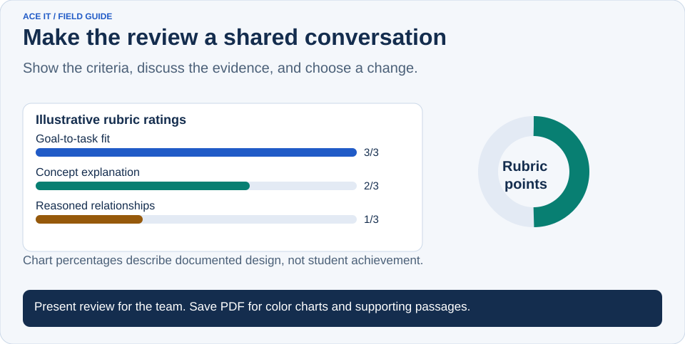
Put the Review on the Big Screen
Planning with a department or teaching team? Select Present review. The presentation view shows the overall score, bar charts for the applicable criteria, and a pie chart of earned and remaining points. Move through the criterion slides with the arrow keys, use Full screen when available, and select Exit presentation to return to the scoring tool.
Use the charts to start a conversation. “Our feedback is described, but where do students act on it?” gives the group something concrete to improve. A chart percentage represents rubric points, not the percentage of students who understand the lesson.
Select Save PDF for a report with color graphs, shaded headings, supporting passages, and page numbers. The downloaded PDF adds no website URL or timestamp. If you use Print review, turn off your browser’s Headers and footers and enable Background graphics in the print dialog. You can also copy the review or download it as text.
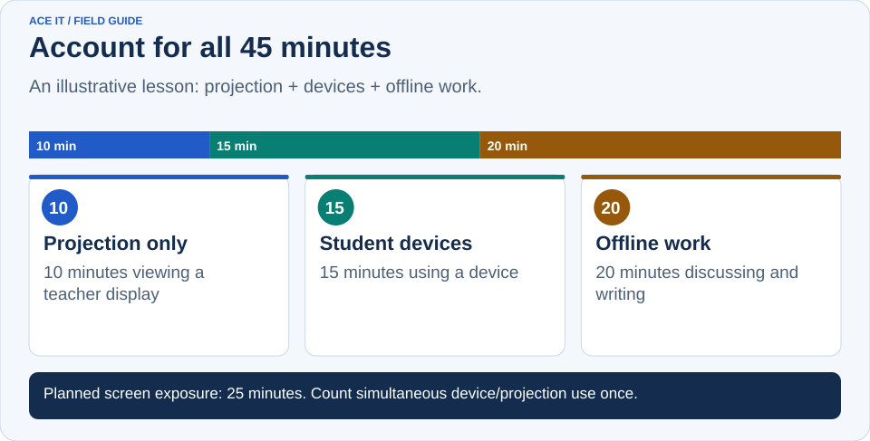
Account for the Screen Time
A lesson can have thoughtful checkpoints and still leave you wondering how long students will spend looking at a screen. Select Check screen time to enter timed activities from the plan. Record student device use, teacher projection only, offline activity, or unclassified time.
For a 45-minute lesson, you might enter 10 minutes viewing a projected example, 15 minutes working on student devices, and 20 minutes discussing and writing on paper. That gives you 25 minutes of planned screen exposure. If students use devices while you project directions, record those minutes as student device use so they are counted once. Use separate logs when groups follow different activity paths.
The tool compares logged activity minutes with the lesson duration and flags gaps or excess time. You enter and review the minutes; it does not automatically infer durations from an uploaded document. If timing is missing, total exposure is not determined. For a syllabus, start with a specific lesson or class session.
A separate four-part rubric asks whether timing is documented, screen activities have a learning purpose, offline opportunities are planned, and learners have usable access alternatives. You rate those parts yourself. Its planning score stays separate from ACE. Fewer screen minutes alone do not earn a better rating, and the estimate does not establish actual usage or a recommended health limit.
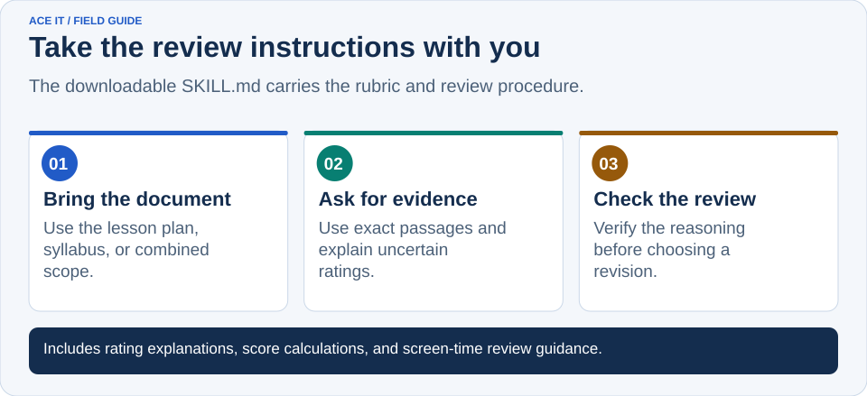
Take the Rubric With You
The ACE review skill is a downloadable Markdown file with the rubric, rating explanations, scoring procedure, and screen-time review guidance. Give it to an assistant that can follow Markdown instructions alongside your document. It directs the assistant to cite evidence and explain uncertainty. Review its conclusions as you would the browser tool’s suggestions.
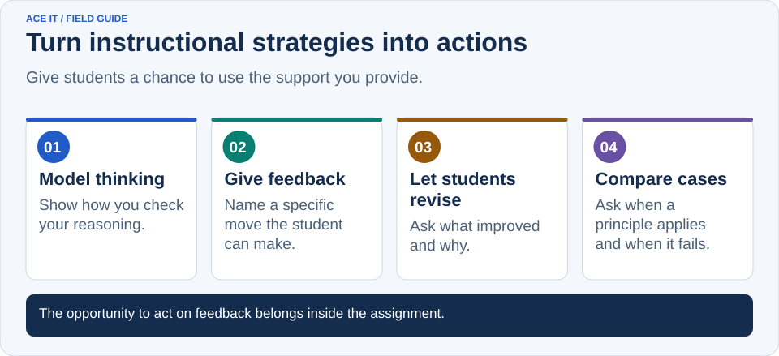
Put High-Effect Strategies to Work
Feedback matters when students can use it. Build in the revision, rather than leaving comments on work students have already finished. Visible Learning MetaX reports a weighted mean effect size of 0.50 for feedback.
Model how you check your own reasoning. Ask, “What do I know? How do these ideas fit? What would make me revise this answer?” That gives students a process to practice. The Education Endowment Foundation recommends explicitly teaching, modeling, and supporting metacognitive strategies.
Teach transfer by comparing the first situation with the changed one. Help students recognize when a principle applies and when it does not. MetaX reports 0.89 for transfer strategies.
Those figures describe research averages for the practices. They do not predict the results of this routine. ACE It combines established ideas; it has not been evaluated as a separate intervention.
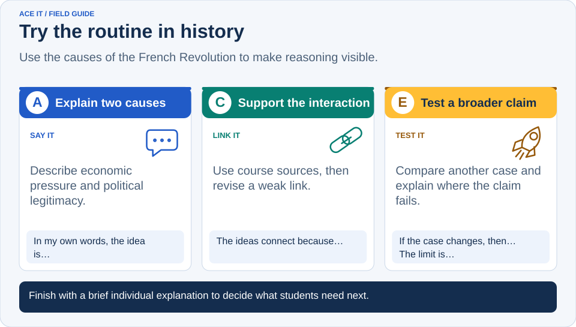
Try It With an Assignment You Know
Take a report about the causes of the French Revolution. At Articulate, students explain two causes. At Connect, they explain how those causes interacted, using course sources. After feedback, they revise one weak link.
At Extend, students propose a claim about how economic pressure and political legitimacy interact. They test it against another case from the course and explain where the comparison breaks down. You can provide the second case for younger learners or ask advanced students to select and justify one.
Add a brief individual follow-up. Ask students to explain a relationship or respond to a changed condition using the permitted course resources. Offer an accessible response mode when speaking or writing is not the skill you are assessing.
Gen AI can generate checkpoint responses, too. A short exchange with the student helps you examine understanding directly. A gap between the submitted work and the follow-up calls for clarification or further assessment; it does not establish misconduct.
Which assignment would give you more useful information if you added one pause for explanation, one for feedback, and one for application?
Build a draft with the ACE It assignment builder, then use ACE Check to review the plan and choose your next improvement.